Page 26 — the shipped shelf
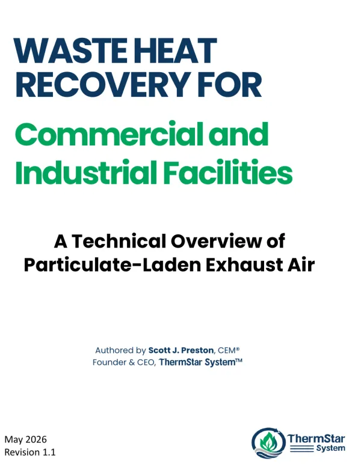
White paper Waste heat recovery for commercial and industrial facilities Fundamentals, dirty-exhaust challenges, PRG and system architecture. By Scott J. Preston, CEM.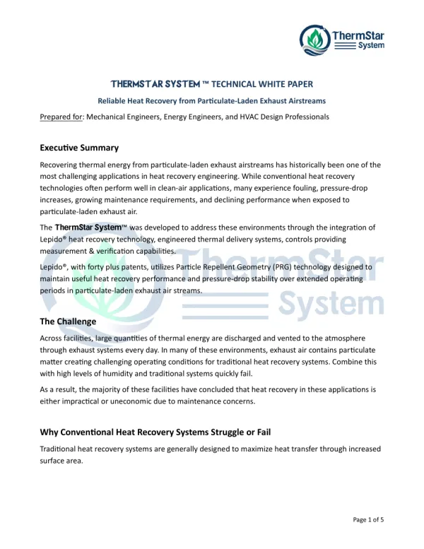
White paper ThermStar System technical white paper Written for mechanical, energy and HVAC design engineers.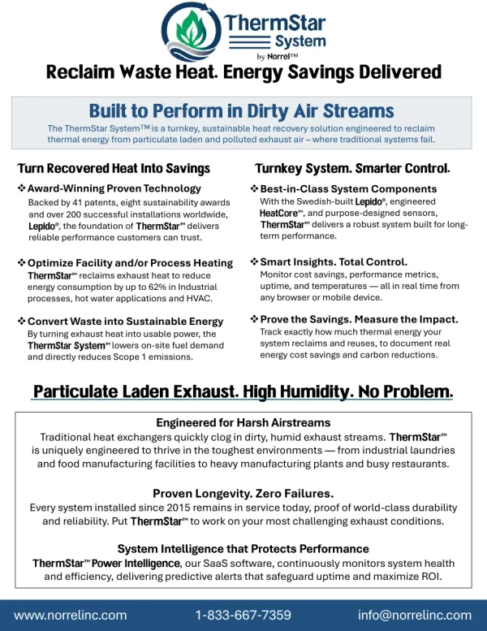
Product literature ThermStar System brochure The turnkey system at a glance: Lepido®, HeatCore™, sensors and controls.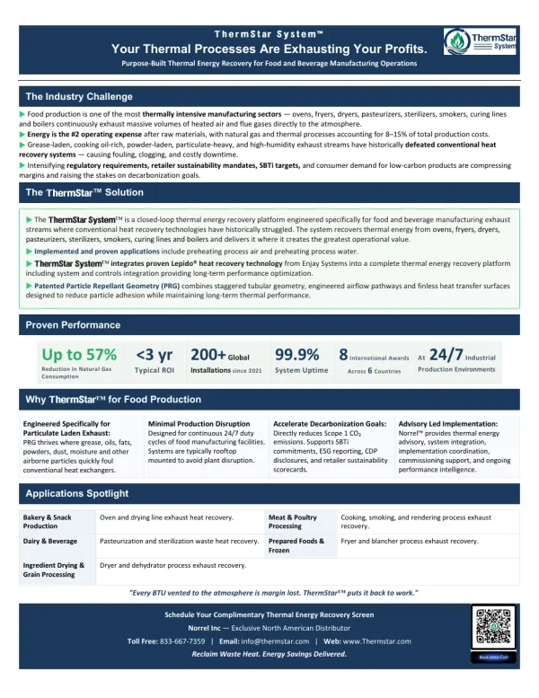
Industry guide ThermStar System for food production Oven, fryer and dryer exhaust, and where that heat can go.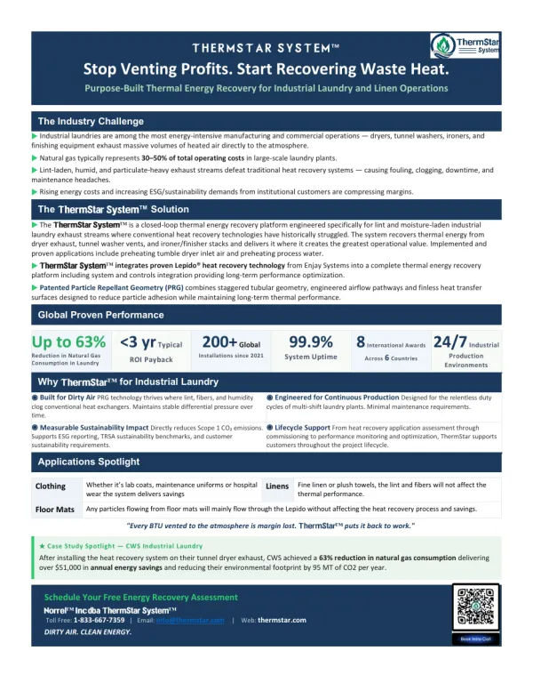
Industry guide ThermStar System for industrial laundry Lint-laden dryer, washer and finisher exhaust, plus the CWS result.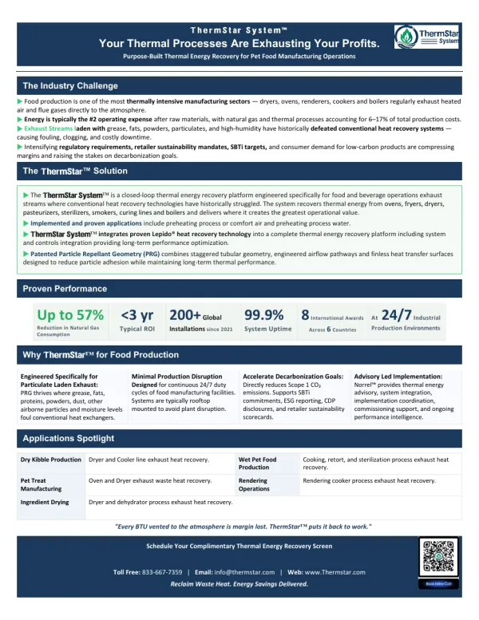
Industry guide ThermStar System for pet food Dryer, oven and cooker exhaust in pet food plants.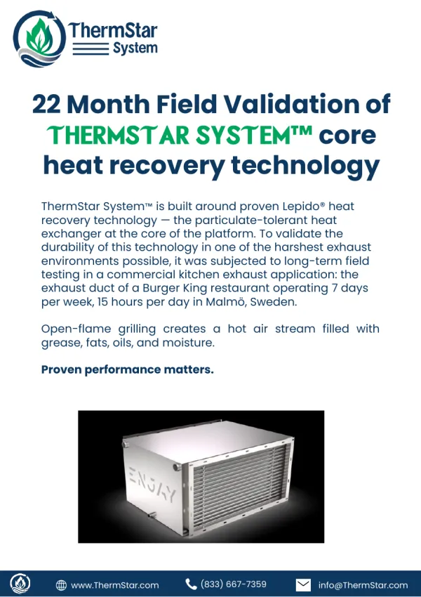
Performance study 22-month field validation of Lepido® Kitchen exhaust, no pre-filter, no cleaning. Effectiveness above 98%.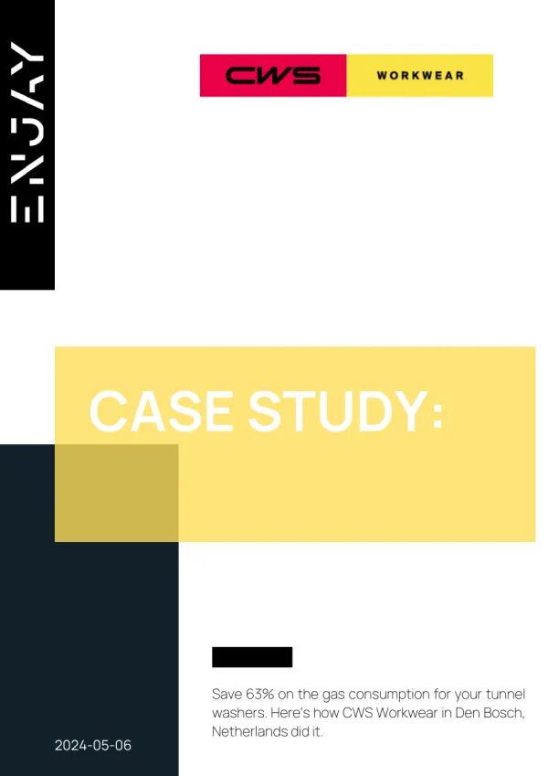
Case study CWS Workwear, industrial laundry 63% less gas on the tunnel washers. Den Bosch, Netherlands.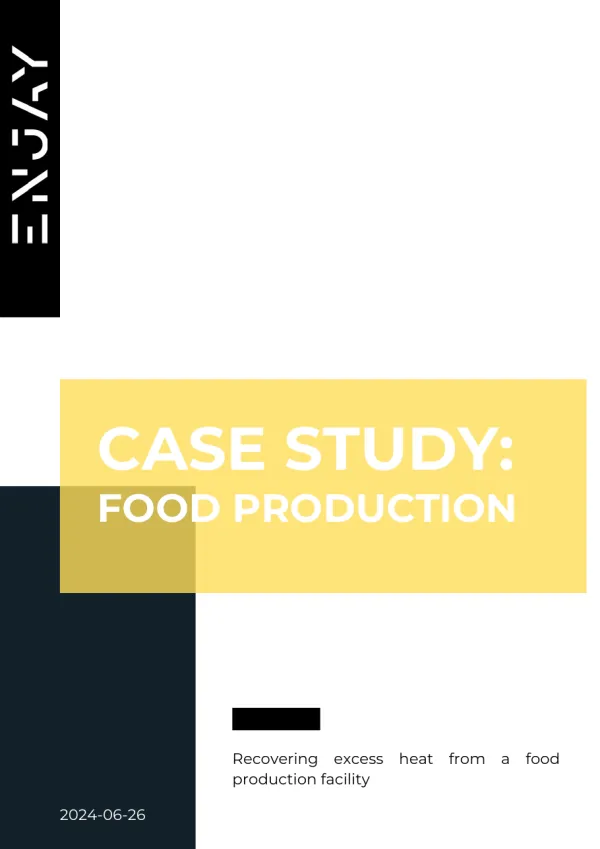
Case study Lantmännen, food production 99% of the site's heat demand covered. Laholm, Sweden.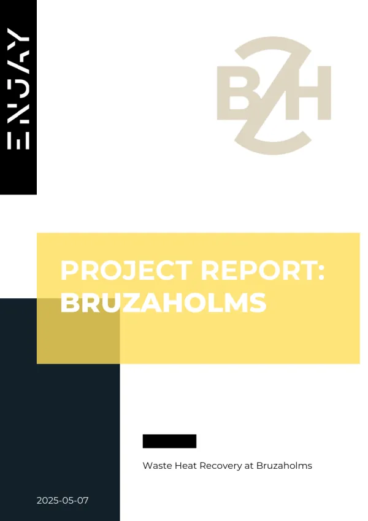
Case study Bruzaholms, foundry 85% of the heating need from sand cooler exhaust. Småland, Sweden.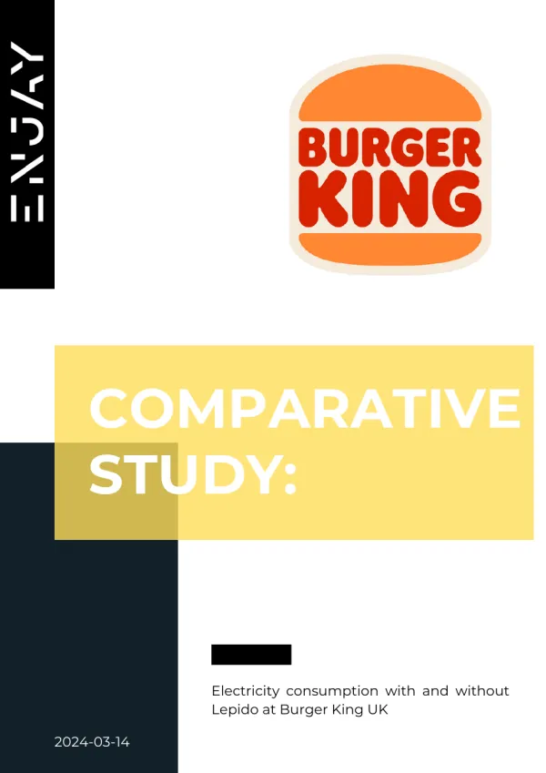
Comparative study Burger King UK, restaurants 11–36% lower electricity bill against a control site. Company Global installed customer base Customers by sector: restaurants, food, manufacturing, laundry and hotels.No "All", a same-tab download link, a filter with no label, two without a file